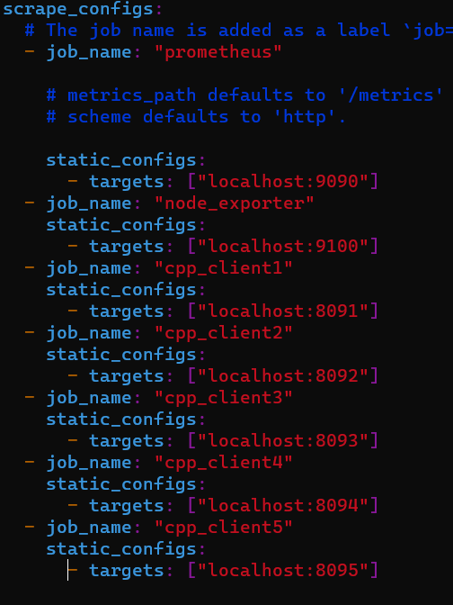
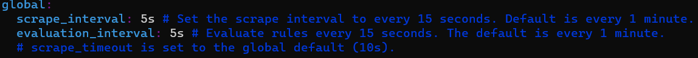
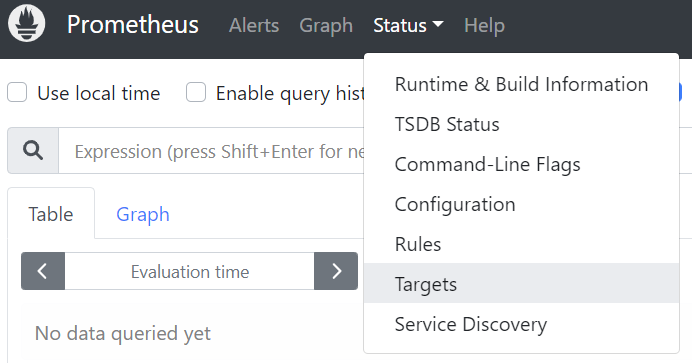
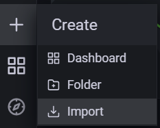
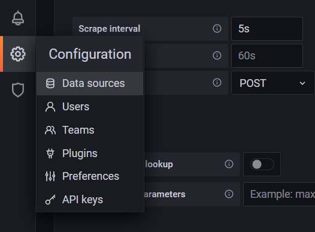

|
|
|
Nexres dynamic dashboard is a Grafana base dashboard for Nexres. It aims to provide a simple real-time interface for developers to monitor and diagnose Nexres. The data is stored in the Prometheus time-series database and queried by Grafana using PromeQL. The system usage data is provided by Prometheus third-party exporter Node Exporter.
Using Nexres dynamic dashboard requires the installation of Prometheus, Node Exporter, Prometheus-cpp, and Grafana. It has been successfully tested with Bazel building in C++17 on Ubuntu 20.04.4 LTS (Windows 11 WSL) and Visual Studio Code.
go to https://prometheus.io/download/ download prometheus
go to https://github.com/prometheus/node_exporter download the lastest version of node_exporter from release
Edit example/start_kv_server.sh, sets the new endpoint address in command line arguments.
Prometheus endpoint starts automatically with nexres. To start nexres:
Default prometheus port is 9090
Default node exporter port is 9100
Default grafana port is 3000
Stop grafana: sudo service grafana-server stop
Edit “prometheus.yml” under your prometheus folder add the following code after “scrape_configs”
Here is the current “scrape_configs” structure, you can find this yml file at here.

After setup your endpoint information, restart prometheus.
change scrape_interval and evaluation_interval.

To check your endpoint status. Start prometheus, go to localhost:9090, and click Targets under Status menu.

This page shows all your endpoints' status. If the endpoint does not show up on this page, remember to set up your endpoint information in prometheus.yml and restart the database.

Please follow this link to set up the connection between grafana and prometheus.
Locate the import button under create menu.

Download the grafana json from this link and import to grafana.
Go to grafana configuration and click data source. Select your prometheus database and click to change setting, locate "Scrape interval" and change it to 5s.

All the prometheus endpoint code and metrics builder are located under Stats class. There are three types of metric variables you can utilize according to the demand. They are Counter, Gauge, and Histogram. You can discover their using scenario in this link.
To properly integrate these metric types to the code, check prometheus-cpp documentation (Documentation, Example). Here is an example of starting a prometheus endpoint and adding a metric to the database.
Create a server running on port 8080
Create a metrics registry (make sure it is always alive)
Add a new gauge family to the registry (you can change this part to other metric type as needed)
Add and remember dimensional data
Ask the exposer to scrape the registry on incoming HTTP requests
Set numerical value to gauge variable
To setup these variables in header file, following the code structure in Stats.h.
Run this command at nexres directory
Run this command at nexres directory